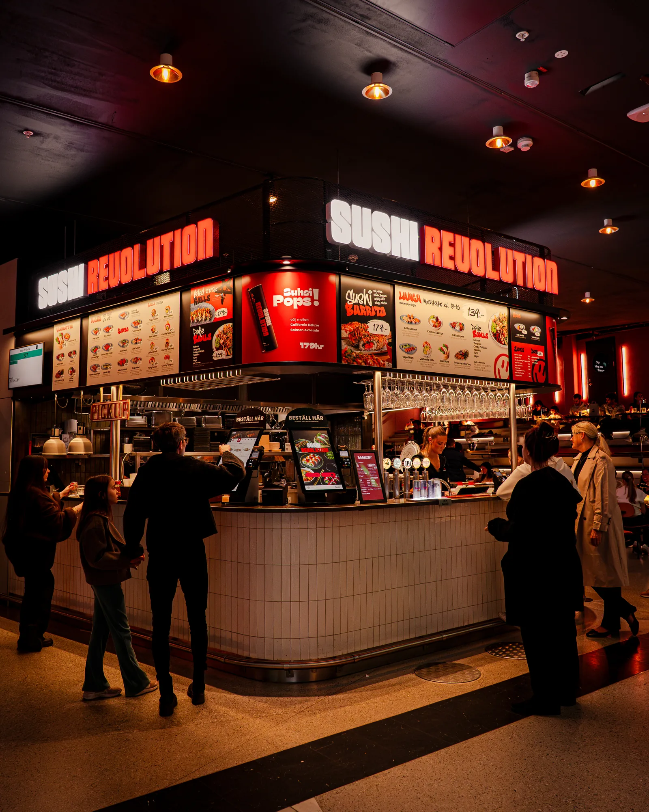
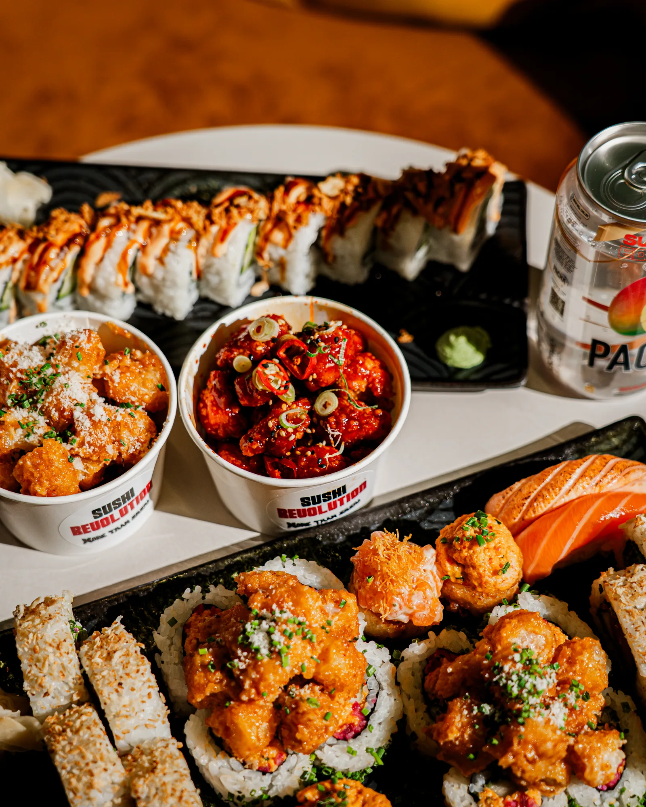
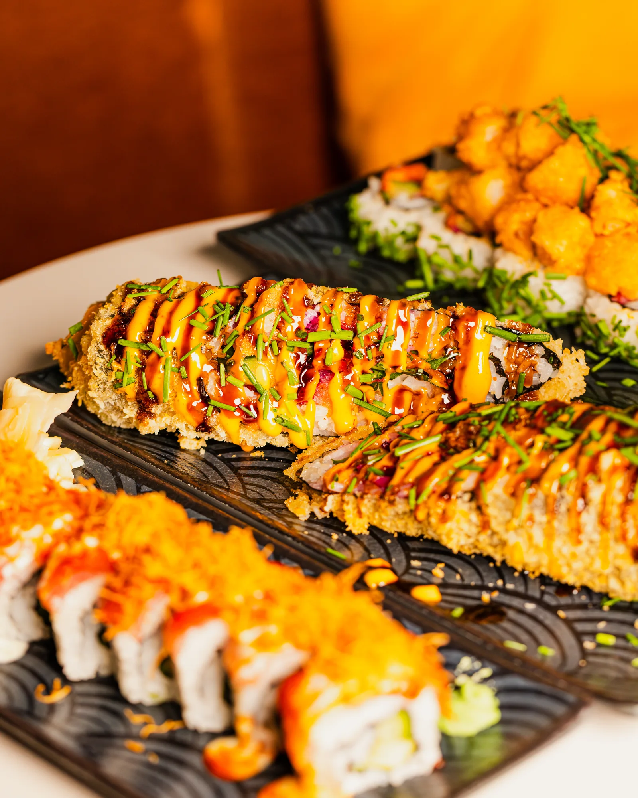

Medimos el éxito en reservas y caja del día — no en likes.

Un restaurante nuevo en Mall of Scandinavia — y cero seguidores para empezar.
Sushi Revolution abrió las puertas en Mall of Scandinavia el 24 de noviembre de 2025. El concepto era afilado — sushi push pops virales, sushi-burritos, take-away rápido. Pero toda la presencia digital había que construirla desde cero, a la vez que se lanzaba el restaurante.
La gente local de Solna y Estocolmo no tenía ni idea de que el local existía. La competencia en Mall of Scandinavia es dura. El lanzamiento tenía que aterrizar fuerte — y los meses siguientes tenían que sostener el momento para que los clientes eligieran este restaurante a la hora de cenar.
- TikTok: 0 seguidores en el lanzamiento
- Instagram: cuenta recién creada, sin historial
- Competencia dura en un centro comercial con muchas opciones de comida
- Necesidad de visibilidad clara desde el día uno — no progresiva

Dos ganchos virales. Una oferta clara.
No hay atajos. Una vez al mes estamos en Mall of Scandinavia con cámara — junto a la cinta de sushi, en caja, con el equipo. Capturamos lo que de verdad vende: ganchos virales (Sushi push pops, sushi-burritos) y ofertas claras (el precio de 99 SEK).
El lanzamiento y la campaña de Sushi push pops se construyeron como momentos virales en TikTok — no al azar, sino planeados para subir la semana correcta y empujar visitas a la caja. El impacto: lanzamiento 398.860 visualizaciones, Sushi push pops 273.070 + 253.660 visualizaciones en paralelo entre TikTok e IG Reels.
- Una visita de producción al local al mes
- Campañas con foco en conversión — no solo clips bonitos
- Calendario de publicación propio para Instagram, TikTok y Facebook
- Cada campaña medida contra caja del día y cola en el local

206 publicaciones en 7,5 meses.
Volumen sin relevancia no llega a nadie. Relevancia sin volumen no se ve. Producimos 206 publicaciones en el período — 33 en TikTok, 35 en Instagram (34 de ellas Reels) y 104 en Facebook. Cada una con un papel claro dentro del conjunto.
El mejor TikTok (el lanzamiento) llegó a 398.860 personas y se llevó 26.660 me gusta y 10.470 compartidos. La campaña de Sushi push pops se llevó 273.070 + 253.660 visualizaciones en paralelo entre TikTok e IG Reels. Sin casualidades — cada vídeo viral estaba planeado para su sitio dentro de la estrategia.
- 33 vídeos de TikTok · 1,72M de visualizaciones en total
- 34 Reels de Instagram · 18K de alcance medio por Reel
- TikTok top: 398.860 visualizaciones, 26.660 me gusta, 10.470 compartidos
- Reel de IG top: 253.660 visualizaciones, 3.232 me gusta, 5.727 compartidos
2,56 millones de visualizaciones. 133.300 interacciones. 3.655 seguidores desde cero. 206 publicaciones en 7,5 meses. El lanzamiento y la campaña de Sushi push pops construyeron momento desde la primera semana.